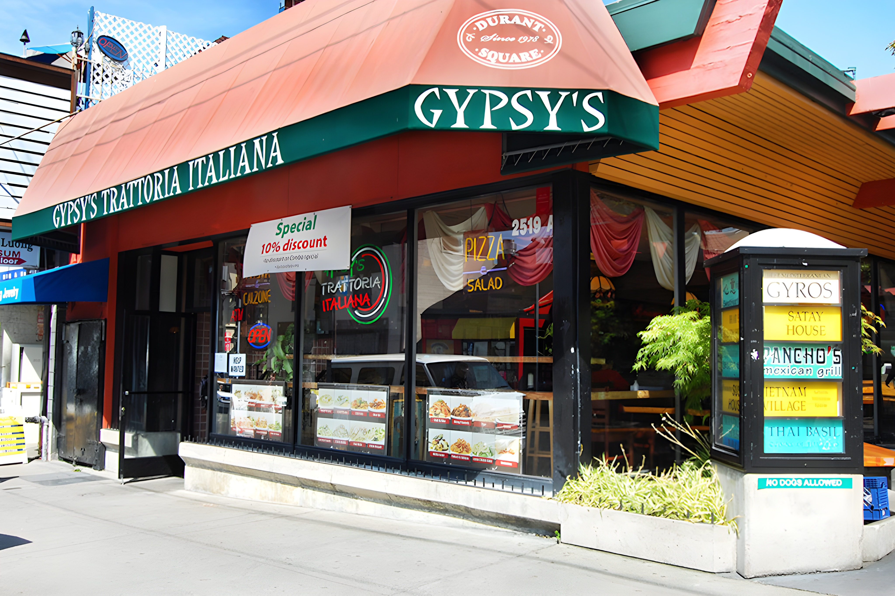
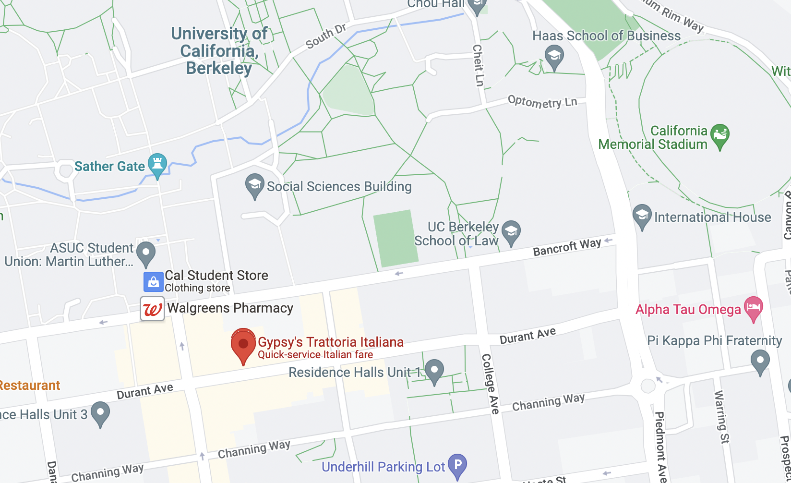

WHAT WE OFFER
Voted "Best of Berkeley" for Best Italian Food, Gypsy's Trattoria Italiana offers gourmet Italian food in fast food style! Each plate can be
customized by our customers since
nothing is pre-made. Everything is
made from scratch in the restaurant
on a daily basis, including base
sauces, stocks, and meatballs. Prices
are low and affordable, ranging from
$8.74 to $12.74. Come in or call in
today to experience the best Italian
food Berkeley has to offer at a
reasonable price!

LOCATION/
CONTACT
CALL: 510-548-4860
FAX: 510-548-4875
HOURS: 10 A.M. - 12 A.M. MON-SUN
ADDRESS: 2519-A Durant Ave.,
Berkeley, CA 94704